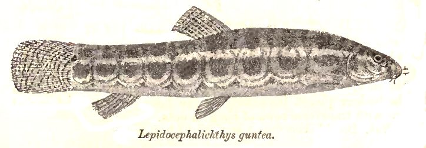

गुंते लोचGuntea Loach
Lepidocephalichthys guntea · Cobitidae · FSH-0082

- Scientific name वैज्ञानिक नाम
- Lepidocephalichthys guntea (Hamilton, 1822)
- Family कुल
- Cobitidae
- Hindi हिंदी
- गुंते लोच
- Local names स्थानीय नाम
- guntea loach, lepidocephalichthys guntea, guincha, gunte
- Status here यहाँ की स्थिति
- native
- Movement आवागमन
- Resident, here all year
- Known from कहाँ दर्ज
- Others have published records from the wider Awadh–Purvanchal plain, none yet from Basti–Ayodhya अवध–पूर्वांचल से दूसरों के प्रकाशित अभिलेख, बस्ती–अयोध्या से अभी नहीं
- IUCN IUCN
- not evaluated
- Review समीक्षा
- not yet reviewed
When to look कब देखें
Present all year. साल भर मौजूद।
Tell it apart from इनसे अलग पहचानें
गुंते लोच / Guntea Loach
Lepidocephalichthys guntea (Hamilton, 1822) — Cobitidae
गुंते लोच — अवध के कीचड़ भरे तालाबों और धान के खेतों में पाई जाने वाली एक पतली पेंदी-निवासी मछली, जिसकी आंख के नीचे दोमुंहा रक्षात्मक कांटा होता है और जो कीचड़ में सांस ले सकती है।
Quick Identification त्वरित पहचान
| Feature | Description |
|---|---|
| Body shape | Slender, elongate, cylindrical body with truncated or slightly rounded caudal fin |
| Subocular spine | Strong, sharp, erectile bifid spine resting in a groove beneath each eye |
| Barbels | Three pairs of barbels: two rostral pairs and one maxillary pair with sensory flaps |
| Color pattern | Pale yellowish-olive with a lateral series of dark blotches forming a jagged stripe |
| Respiration | Intestinal air-breathing capability allowing survival in hypoxic, foul mud |
Elongated, cylindrical loach adapted for life in muddy substrates, possessing a sharp erectile bifid subocular spine beneath each eye for antipredator defense. The mouth is subinferior with three pairs of barbels. The body is light yellowish-grey with a lateral band of interconnected dark blotches and a small black spot at the upper base of the caudal fin.
हिंदी: कीचड़ में रहने वाली पतली और गोल लोच मछली। इसकी दोनों आंखों के नीचे एक नुकीला दोमुंहा कांटा होता है। मुंह पर तीन जोड़ी मूंछें होती हैं। यह कम ऑक्सीजन वाले कीचड़ में भी सांस ले सकती है।
Morphology शारीरिक संरचना
| Feature | Description | Source |
|---|---|---|
| Total length (maximum) | 15 cm TL | Froese & Pauly (2025), FishBase |
| Subocular spine | Sharp, erectile bifid spine housed in a fleshy socket beneath each eye | Day (1889) |
| Barbels | Three pairs: two rostral pairs and one maxillary pair | Talwar & Jhingran (1991) |
| Fin structure | Truncate caudal fin marked with several transverse rows of dark spots | Jayaram (2010) |
The body is elongated, slender, and nearly cylindrical anteriorly, becoming slightly compressed behind the pelvic fins. The head is small and compressed; the snout is blunt and fleshy. The subinferior mouth is surrounded by fleshy, lobed lips and bears 3 pairs of barbels: 2 rostral pairs and 1 maxillary pair, with additional small barbel-like flaps along the lower lip (Talwar & Jhingran 1991). Beneath each eye sits a sharp, bifid, erectile subocular spine that can be locked outward at a ninety-degree angle when threatened (Day 1889). Scales are minute, imbricate, and present on the head behind the eyes. The dorsal fin has 8 to 9 rays and originates opposite or slightly behind the pelvic fins (Talwar & Jhingran 1991). The anal fin possesses 7 to 8 rays. The caudal fin is truncate or slightly rounded. Coloration is dirty yellowish-tan to greyish-green, with a broad longitudinal stripe composed of confluent dark spots along the side and a distinct black spot at the upper caudal base (Jayaram 2010).
हिंदी: FishBase (Froese & Pauly 2025) के अनुसार अधिकतम कुल लंबाई 15 सेमी होती है। दोनों आंखों के नीचे एक नुकीला दोमुंहा कांटा (Day 1889) होता है जो खतरे के समय बाहर निकल आता है। तीन जोड़ी मूंछें (Talwar & Jhingran 1991) होती हैं।
Behaviour & Ecology व्यवहार एवं पारिस्थितिकी
An exceptional bottom-dwelling survivor adapted to stagnant, muddy, and oxygen-depleted wetland microhabitats. It spends much of the day buried completely within fine silt and soft mud, leaving only its eyes and nostrils protruding above the sediment. At night and during overcast rains, it emerges to sift through bottom sediments. When ponds dry during summer, it burrows deep into damp bottom mud to aestivate. Most notably, it possesses a vascularized posterior gut enabling intestinal air-breathing: it dashes to the surface, gulps atmospheric air, and extracts oxygen through its intestinal walls.
हिंदी: यह कीचड़ में धंसकर रहने की माहिर मछली है। यह दिन भर गाद के अंदर दबी रहती है और केवल आंखें बाहर रखती है। कम ऑक्सीजन होने पर यह सतह पर आकर हवा निगलती है और अपनी आंतों से सांस लेती है।
Life Cycle / Phenology जीवन चक्र एवं फेनोलॉजी
Spawning is synchronized with the monsoon rains from June to September, when seasonal floods inundate shallow paddy fields, marshes, and ditches (Talwar & Jhingran 1991). Adults disperse across flooded agricultural fields and grassy shallows. The female deposits several hundred tiny adhesive, yellowish demersal eggs among submerged grassy roots and filamentous algae (Day 1889). The eggs hatch rapidly in warm, shallow water, and the newly emerged larvae immediately seek refuge in soft mud, developing rapid burrowing and spine defenses.
हिंदी: प्रजनन वर्षा ऋतु में जून से सितंबर के दौरान होता है (Talwar & Jhingran 1991)। मछलियां धान के भरे हुए खेतों और उथले घास वाले गड्डों में अंडे देती हैं (Day 1889)। गर्म पानी में अंडों से तेजी से बच्चे निकलते हैं।
Host Plants or Prey आहार एवं शिकार
Benthic omnivore and detritivore. It takes mouthfuls of mud and silt into its mouth, filtering out organic particles, decaying vegetative detritus, and benthic microorganisms. Its animal prey includes mosquito larvae, tiny worms (oligochaetes and nematodes), chironomid midges, small cladocerans, and ostracods. Its foraging actively bioturbates and aerates muddy substrates.
हिंदी: यह कीचड़ और गाद को मुंह में भरकर छानती है। यह सड़ी-गली पत्तियां, सूक्ष्म जलीय शैवाल, मच्छरों के लार्वा, छोटे केंचुए और कीचड़ के कीड़े खाती है।
Predators / Natural Enemies प्राकृतिक शत्रु एवं शिकारी
Frequently preyed upon by wetland predators adapted to foraging in muddy shallows. It is hunted by snakeheads (Channa punctata), climbing perch (Anabas testudineus), and freshwater spiny eels (Macrognathus pancalus). Checkered keelbacks (Fowlea piscator) systematically probe mud for burrowing loaches. Wading birds, including the Indian Pond Heron (Ardeola grayii) and Little Egret (Egretta garzetta), capture them in drying pools. Its erectile subocular spines serve to lodge painfully in the throats of predators attempting to swallow it.
हिंदी: इसे सौल, कवाई और बाम जैसी मछलियां और ढोंड सांप खाते हैं। बगुले और पनकौआ भी उथले पानी से इसका शिकार करते हैं। इसके आंख के नीचे का कांटा शिकारी के गले में चुभकर इसकी रक्षा करता है।
Agricultural / Human Relevance कृषि एवं मानव उपयोगिता
Extremely common across rural wetlands, village ponds, and rice paddies throughout Uttar Pradesh. It is harvested in abundance during post-monsoon draining of paddy fields and roadside ditches using fine hand-nets and bamboo traps. It represents a staple small indigenous fish species (SIFS) eaten whole in traditional village curries, providing essential calcium, iron, and protein to marginal rural households.
हिंदी: यह धान के खेतों और ग्रामीण तालों में बहुत आसानी से मिल जाती है। ग्रामीण इसे छोटी देसी मछली (SIFS) के रूप में खूब खाते हैं, जिससे गरीबों को सस्ता प्रोटीन, कैल्शियम और आयरन मिलता है।
Expected Locally क्षेत्रीय संभावना
Not a field record. Written from published accounts for eastern Uttar Pradesh. No confirmed local sighting yet — if you have seen it, that is what the atlas needs.
अभी तक स्थानीय पुष्टि नहीं। यह विवरण प्रकाशित स्रोतों से है, किसी अवलोकन से नहीं।
GBIF holds published records throughout the Gangetic plains in Uttar Pradesh and neighboring states. It is expected in virtually every muddy wetland, agricultural ditch, oxbow lake, and seasonal swamp across Ayodhya and neighboring districts. A confirmed local record requires a clear photograph showing the erectile subocular spine, mouth barbels, and flank pattern with locality details.
हिंदी: यह अवध के लगभग हर कीचड़ भरे तालाब, धान के खेत और नाले में संभावित है। पुष्टि के लिए आंख के नीचे का दोमुंहा कांटा, मूंछें और शरीर की धारियां दर्शाती स्पष्ट तस्वीर चाहिए।
Distribution वितरण
Native across the northern Indian subcontinent, spanning India, Pakistan, Nepal, Bangladesh, and Myanmar in the Indus, Ganges, Brahmaputra, and Meghna drainages. Within Uttar Pradesh, it occurs ubiquitously in low-energy and muddy wetland systems.
हिंदी: यह भारत, पाकिस्तान, नेपाल, बांग्लादेश और म्यांमार की नदी घाटियों में पाई जाती है। उत्तर प्रदेश में यह उथले पानी और कीचड़ वाले सभी प्राकृतिक आवासों में मिलती है।
Research Questions शोध प्रश्न
- How do pesticide and synthetic fertilizer runoffs in intensively cultivated rice paddies impact intestinal air-breathing physiology in Lepidocephalichthys guntea?
- What are the energetic costs and survivorship benefits of mud-aestivation during severe pre-monsoon drought conditions?
- How effective is the erectile bifid subocular spine in deterring predation by water snakes and wading birds?
- What role does benthic bioturbation by Lepidocephalichthys guntea play in nutrient cycling within tropical paddy agroecosystems?
- क्या धान के खेतों में रसायनिक खादों के अत्यधिक उपयोग से गुंते लोच की सांस लेने की क्षमता पर बुरा असर पड़ता है?
- क्या गर्मियों में तालाब सूखने पर यह मछली कीचड़ में दबकर लंबे समय तक जीवित रह सकती है?
Similar Species समान प्रजातियाँ
| Similar species | Distinction | Hindi distinction | |
|---|---|---|---|
| Zig-zag Spiny Eel \ | Mastacembelus armatus | Much larger, eel-like body with a long series of isolated dorsal spines and elongated rostral snout | बाम मछली आकार में बहुत बड़ी और सांप जैसी होती है, जिसकी पीठ पर कांटों की लंबी कतार होती है |
| Cuchia \ | Monopterus cuchia | True swamp eel completely lacking pectoral, pelvic, and dorsal fins; smooth cylindrical body | कुचिया मछली के पास कोई पंख नहीं होते और इसका शरीर चिकना व भूरा होता है; यह एक असली दलदली ईल है |
| Slender Rasbora \ | Rasbora daniconius | Free-swimming pelagic minnow with terminal mouth; lacks subocular spines and mud-burrowing habits | स्लेंडर रासबोरा पानी की ऊपरी सतह पर तैरने वाली मछली है, जिसमें आंख के नीचे कांटा नहीं होता |
Field rule: Slender muddy loach with sharp bifid subocular spine, 3 barbel pairs, and intestinal air-breathing.
हिंदी: कीचड़ में रहने वाली पतली लोच मछली, जिसकी आंख के नीचे दोमुंहा कांटा और मुंह पर तीन जोड़ी मूंछें होती हैं।
Taxonomy & Classification वर्गिकी एवं वर्गीकरण
Original description. Hamilton (1822), An Account of the Fishes Found in the River Ganges and Its Branches, p. 353; type locality: ponds and freshwaters of Bengal, India.
Subspecies. Monotypic species; widespread across the northern alluvial plains with minimal morphological divergence.
Family and order placement. Belongs to the true loach family Cobitidae, order Cypriniformes, class Actinopterygii.
IUCN status rationale. Not evaluated by the IUCN Red List; abundant, extremely resilient, and widespread throughout the Indian subcontinent.
हिंदी: फ्रांसिस हैमिल्टन ने 1822 में इसका पहला वैज्ञानिक विवरण दिया था। यह कोबिटिडे कुल और सिप्रिनिफॉर्मीस गण की सदस्य है।
Photo Gallery फोटो गैलरी
No photos yet — add field photos to media/species/guntea_loach/ and run node scripts/sync_photos.js.
Photos needed आवश्यक फोटो
- [ ] Lateral view of adult displaying elongated cylindrical body and flank blotches (वयस्क मछली के पूरे शरीर और पार्श्व चितकबरे धब्बों का स्पष्ट दृश्य)
- [ ] Close-up of head showing erected bifid subocular spine beneath the eye (आंख के नीचे खड़े हुए दोमुंहे कांटे और मूंछों का विस्तृत क्लोज-अप दृश्य)
- [ ] Specimen partially buried in wetland silt with only eyes and snout protruding (कीचड़ में दबी हुई मछली का दृश्य जिसमें केवल आंखें और मुंह बाहर दिखें)
- [ ] Detail of truncate caudal fin showing transverse spotting and upper basal spot (पूंछ के पिछले हिस्से पर काले धब्बों और धारियों का स्पष्ट दृश्य)
- [ ] Inundated paddy field or roadside muddy ditch habitat in Awadh (अवध के धान के खेत या कीचड़ भरे गड्ढे का प्राकृतिक वास परिदृश्य)
- [ ] Fresh catch of small loaches displayed in traditional rural fishing gear (पारंपरिक जाल में पकड़ी गई ताजा गुंते लोच का फील्ड दृश्य)
References संदर्भ
- Original description: Hamilton, 1822 — see GBIF.
- Day, F. (1889). The Fauna of British India, Including Ceylon and Burma: Fishes. Vols. 1–2. Taylor & Francis, London.
- Talwar, P. K. & Jhingran, A. G. (1991). Inland Fishes of India and Adjacent Countries. Vols. 1–2. Oxford & IBH Publishing Co., New Delhi.
- Jayaram, K. C. (2010). The Freshwater Fishes of the Indian Region. Narendra Publishing House, Delhi.
- Froese, R. & Pauly, D. (Eds.) (2025). FishBase. World Wide Web electronic publication.
- GBIF Occurrence Data — Lepidocephalichthys guntea, India (2025).
Source file: species/fauna/fish/guntea_loach.md